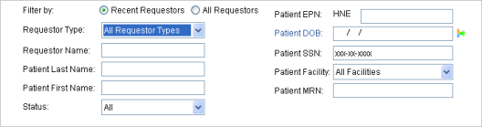
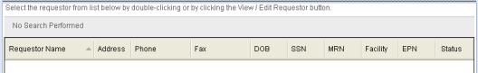

The Find Requestor form enables authorized users to:
The system enables or disables data entry fields dynamically, depending on the Requestor Type setting. Patient and non-patient fields are mutually exclusive. Basically, fields that relate to patient information (like Patient Last Name or Patient DOB) are disabled when Requestor Type is not Patient or when data exists in any non-patient field (like Requestor Name)
To open the form
Select Requestors > Find Requestor.
Note: Other navigation options on the Requestors tab are disabled until you select a requestor record to view.
Item descriptions
Main content pane

Filter By
Specifies the filter criteria to use when listing requestors. Options are:
Defaults to Recent Requestors.
Requestor Type box
Allows you to select a category of requestors (such as attorney, patient, physician, and so on) to use for finding requestors.
Lists all requestor types currently defined for your system. Defaults to All Requestor Types.
Requestor Name box
Allows you to enter all or the beginning characters of a requestor name to find. Disabled if Requestor Type is Patient.
Requires at least three characters.
Patient Last Name
Allows you to enter all or the beginning characters of a patient requestor's last name to find. Requires at least three characters, or three across Last Name and First Name if both fields are used.
Patient First Name
Allows you to enter all or the beginning characters of a patient requestor's first name to find. Requires at least three characters, or three across Last Name and First Name if both fields are used.
Status box
Allows you to limit the search to only Active or Inactive requestors or to include All requestors.
Defaults to All.
Patient EPN box
Enterprise Person Number of the patient. EPN is an identifier created by an Enterprise Master Person Index (EMPI) system to uniquely identify a person across all enterprise systems and facilities.
Displays only when the Requestor Type is Patient or All Requestor Types AND the system is EPN-enabled. Optionally displays the configured EPN prefix, depending on your election (default setting is no prefix).
Requires a minimum of three search characters (excluding the EPN prefix).
Patient DOB box
The patient requestor's date of birth.
Defaults to mm/dd/yyyy. Allows you to manually edit month, day, and year values.
Patient SSN box
Allows you to enter all or the beginning characters of the patient requestor's Social Security Number.
Patient Facility box
Allows you to select a Facility where patient care occurred.
Defaults to Select Facility.
Patient MRN box
Allows you to enter all or the beginning characters of the patient requestor's MRN (Medical Record Number).
Find Requestor button
Triggers the search based on the criteria you entered.
Enabled only after you have entered minimum required search criteria.
New Requestor button
Allows you to create a new requestor, if you have required permissions.
Launches the Requestor Information form.
Reset button
Discards unsaved entries, clears all data entry boxes or restores them to their default states, clears any search results, and permits you to start over.
Detail pane

Requestor grid
Displays the requestor search result set and allows you to a select requestor.
Can be sorted on all columns.
Contains the following information:
View/Edit Requestor button
Allows you to view and/or edit information for a selected requestor.
Enabled only after you have selected a requestor.
Launches the Requestor Information form and displays the selected requestor's information.
Create Request button
Displays only if you have Create Request permissions.
Allows you to create a request for the selected requestor.